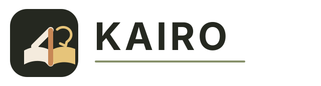
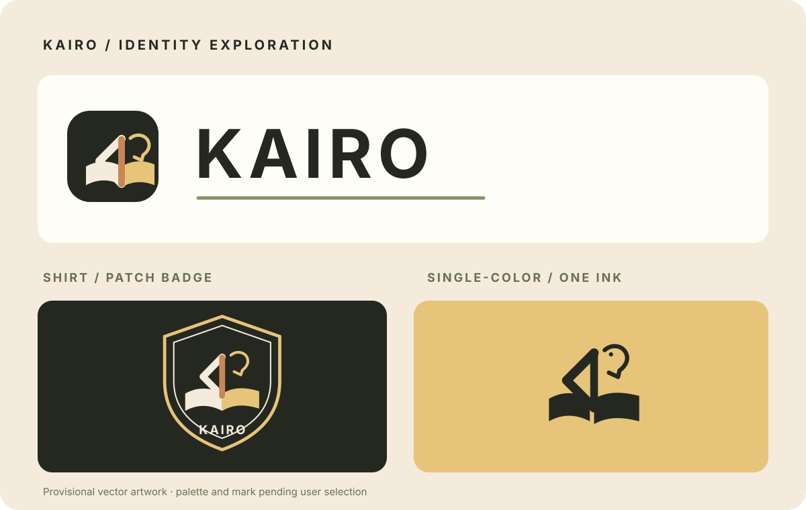

Access · Architecture & delivery · v1Design proposal · adult university / TVET pilot
A teacher who can follow
your understanding.
One source-grounded lesson, expressed through a clear board, a warm teacher, useful practice and evidence you own. Touch a number. Ask why. Interrupt. Try again.
Explore the architectureThe complete plan
Current evidence, target architecture and the first coherent lesson.
Read the blueprint indexArchitecture & decisions
Teaching in time
One audio clock for speech, mouth, gaze, pointing and board actions.
Teaching contract50 acceptance scenarios
Language & access
Setswana and isiZulu evaluated separately. SASL authored and Deaf-reviewed.
Speech & cloud researchModel and data catalog
Evidence & economics
Learning outcomes, Lean Canvas, cost assumptions and secure operations.
Learning & Lean CanvasCloud & costs
Data & security
Source revisions, tenant boundaries, consent, memory and controlled tools.
Data model & APIThreat model & SSDLC
Fresh-chat handoff
Claude refines the plan. Codex and Claude take clear, reviewed responsibilities.
Copy the startup promptsDelivery, roles & SDLC

Editable context, container, use-case, ERD, interruption sequence and state diagrams · Primary-source ledger